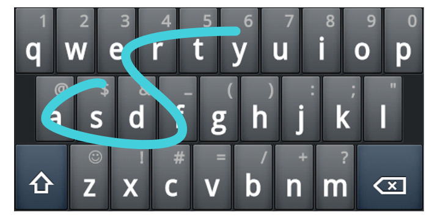

When someone uses a Swype-style keyboard to enter text into a mobile device, the software usually draws a line representing the path their finger has taken. Each image in this puzzle depicts the finger-paths for multiple words in a sentence or sentence fragment, with the keyboard itself removed.
The title is a reference to Swiper from Dora the Explorer, meant to help confirm to the solvers that if they're thinking about the Swype keyboard then they're on the right track.
To figure out the text, solvers need to isolate each indidivual finger-path, map it approximately to a keyboard, and figure out which word is being entered.
The path for each word may start at one end or the other, so solvers have to consider both orderings when guessing the word. It will be easier to guess the word if the solvers find an appropriate image of a swype keyboard and figure out how to align it onto these images. For example, swype.com has some images which, if cropped and scaled properly, should line up fine. These images use only the alphabetic letters of the keyboard, the fourth row is not used.
For example, here is the fourth image with the keyboard underneath it:
And here is one of the words of that image, isolated:

In this example, it looks like 'E' 'F' and 'A' are probably letters in the word, since the typist "cornered" on those letters, and 'S' and 'Y' as well, since those are the endpoints. Other letters along the way may be involved, but the only word that matches SA[D]F[DR]E[RT]Y (or the other direction, Y[TR]E[RD]F[D]AS) is SAFETY.
Once solvers have the words, they must determine the phrase for that image and identify its source. Each image corresponds to text delivered in a movie over a phone or some phone-like device. Solvers must identify the movies, and use the parenthesized numbers from the puzzle as indexes into the movie titles.
| Image Number | Text | Movie | Index | Letter |
| 1 | You can't stop the signal | Serenity | 1 | S |
| 2 | I need an exit fast | The Matrix | 2 | H |
| 3 | Hi uh Nikki this is Mike | Swingers | 7 | R |
| 4 | Can you guarantee my safety | Sneakers | 3 | E |
| 5 | Shall we play a game | WarGames | 1 | W |
| 6 | This is Mr. Incredible I'm in | The Incredibles | 9 | D |
| 7 | Give me back my son | Ransom | 3 | N |
| 8 | I'm talking about Anne Lively | Minority Report | 10 | E |
| 9 | Mum have you been bitten | Shaun of the Dead | 1 | S |
| 10 | Do you like scary movies | Scream | 1 | S |
This spells the answer, SHREWDNESS.